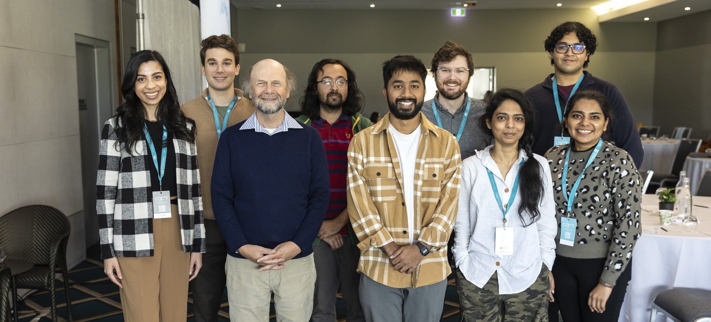

The Quantum Optics Theory - Quantum Information (QuOTh-QI) research group, spearheaded by Professor Timothy C. Ralph,
is one of Australia's foremost institutes for the theoretical quantum information and quantum optics research.
Some of the fields we are world leaders in include quantum optical computation, theoretical quantum computing,
quantum communication, relativistic quantum information and theoretical optics.
We are proudly affiliated with the University of Queensland and the Australian Research Council Centre of Excellence for Quantum Computation and Communication Technologies (CQC2T).
Together with collaborators, both domestically in Australia and internationally, we have produced a large catalogue of high-impact
research, and we are constantly seeking to push boundaries and make breakthroughs in the field of quantum information science and
quantum optics.